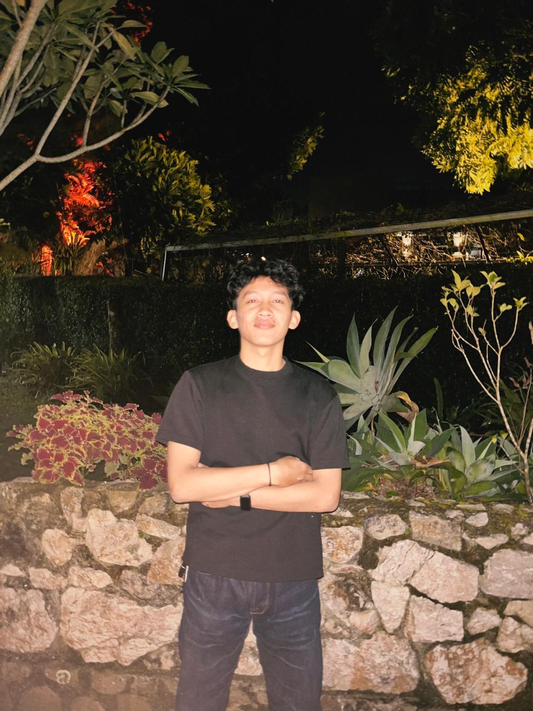

Implementasi Sistem SCADA pada Pembuatan Selai Coklat
Sistem SCADA untuk memantau dan mengendalikan proses pembuatan selai coklat.
SCADA
Saya adalah mahasiswa aktif Program Studi Teknik Otomasi Industri yang memiliki minat besar dalam bidang sistem SCADA (Supervisory Control And Data Acquisition). Saya aktif dalam organisasi kemahasiswaan, khususnya di Himpunan Mahasiswa Listrik, yang membantu saya mengembangkan kemampuan kepemimpinan, komunikasi, dan kerja sama tim. Saya dikenal sebagai pribadi yang adaptif, memiliki semangat belajar tinggi, serta mampu berpikir kritis dalam menyelesaikan masalah. Saya siap untuk terus belajar dan berkontribusi secara positif dalam dunia kerja, khususnya di bidang otomasi dan sistem kendali industri.
Sistem SCADA untuk memantau dan mengendalikan proses pembuatan selai coklat.
SCADAMonitoring produksi mesin filling Tetra Top 3 menggunakan dashboard Grafana.
Grafana